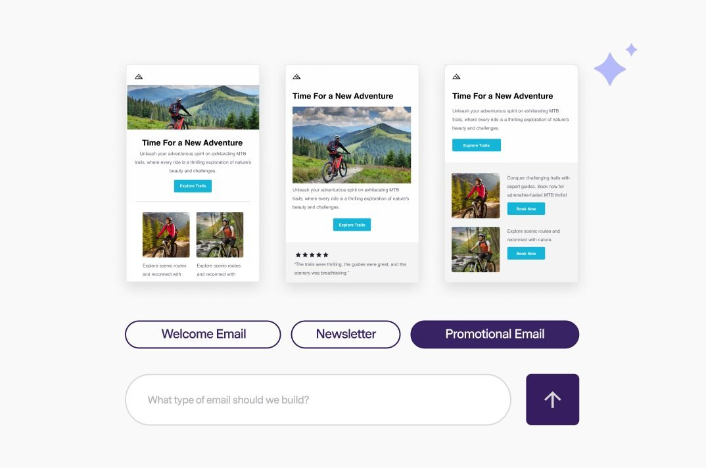

Dead Brands Services
Your Marketing Doesn’t Need More Likes. It Needs More Revenue.
Vanity metrics are the participation trophies of marketing. Followers don’t pay invoices. Here’s how to build marketing that answers one question: did it make us money?

Vanity metrics vs. money metrics
Open any marketing report and you’ll see the same parade: impressions, reach, followers, likes. Numbers that go up and to the right and mean almost nothing. I’ve never seen a P&L with a line item for “engagement.”
Money metrics are uglier and more useful: cost per qualified lead, pipeline created, close rate by source, customer acquisition cost, payback period. If your marketing can’t connect to at least one of those, it’s entertainment, not marketing. Entertainment is fine — just don’t budget for it like it’s growth.
Message before media
The most common marketing mistake I see: picking the channel before the message. “We need to be on TikTok.” Why? “Everyone’s on TikTok.” That’s not a strategy, that’s FOMO with a content calendar.
The channel is just plumbing. What moves revenue is the message: who it’s for, what problem it solves, and why you’re the one to solve it — stated so plainly a tired prospect gets it in five seconds. Nail the message and almost any channel works. Skip the message and no channel saves you.
The offer is the marketing
Here’s an uncomfortable truth: most B2B marketing fails because the offer is weak, not because the creative is weak. A crystal-clear offer — a free assessment, a diagnostic, a trial, a guarantee — will outperform clever branding every time.
Ask yourself what your marketing is actually asking the prospect to do. If the answer is “be aware of us,” you don’t have an offer. Awareness is what you get when the offer works, not the goal itself.
Consistency beats campaigns
Everybody wants the big campaign — the launch, the splash, the viral moment. But revenue comes from the boring cadence: the weekly email that actually gets opened, the content that shows up every single week, the follow-up sequence that runs whether you’re busy or not.
Marketing compounds like interest. The businesses winning at this aren’t doing anything exotic; they’re just still doing it in month nine, when everyone else quit in month three because the likes weren’t rolling in.
Attribution honesty
You will never get perfect attribution. The buyer journey is a mess — they saw your post in March, heard your name on a podcast in May, clicked an ad in July, and told sales “Google” because it was the last thing they remembered. Anyone selling you perfect multi-touch attribution is selling you a dashboard, not the truth.
Use directional truth instead: which sources consistently show up in closed deals, which campaigns correlate with pipeline growth, what your customers say brought them in. It’s not perfect. It’s honest — and honest beats precise-but- wrong every time.
Where I fit in
I’m David Strausser. I’ve built pipeline as a sales leader and a business developer, which means I judge marketing the way a salesperson does: did it create conversations that close? When I work on marketing with a company, we start with the message and the offer, wire it to money metrics, and build the consistent engine — not the vanity parade.
Go deeper
The full marketing expert guide
This page is the overview. The full guide covers how I assess a company’s marketing, what the engagement looks like, and how we connect every dollar of spend to pipeline. If your reports look great and your revenue doesn’t, read it.
Frequently asked questions
How much should a small business spend on marketing?
Less than you think at first, more than you think later. Start by fixing the message and the offer — that costs thinking, not money. Then spend in small, measurable tests tied to pipeline, and scale what proves out. A fixed percentage of revenue is a fine rule of thumb, but the real answer is: spend what earns.
How long before marketing shows results?
Paid and outbound can produce pipeline in weeks. The compounding stuff — content, brand, referrals — takes quarters. Anyone promising both fast and compounding is selling something. I’ll tell you which timeline your situation fits before we spend a dollar.
Should I hire in-house or outsource marketing?
It depends on stage. Early on, outsourced specialists usually beat a junior generalist — you get senior thinking without the salary. Once marketing is a proven revenue driver with consistent volume, bringing it in-house starts to make sense. We’ll figure out where you are on that curve.
Want marketing that answers to revenue?
Thirty minutes. Bring your metrics — we’ll find the ones that matter.